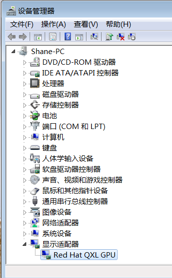

Two ways of using vms on Linux are introduced. One is using virt-manager GUI, another is using the raw qemu-system.
QEMU
1 | pacman -S qemu bridge-utils iptables dnsmasq ebtables |
check for module loading:1
2lsmod | grep kvm
lsmod | grep virtio

To auto load a module at boot, create a file like ‘/etc/modules-load.d/virtio.conf’1
2# Load virtio at boot
virtio
Ubuntu Setting socks5 proxy
1 | sudo apt-get install tsocks |
edit /etc/tsocks.conf1
2
3
4
5
6
7
8local = 192.168.122.0/255.255.255.0
local = 10.0.0.0/255.0.0.0
server = 192.168.122.1
# Server type defaults to 4 so we need to specify it as 5 for this one
server_type = 5
# The port defaults to 1080 but I've stated it here for clarity
server_port = 1080
1 | sudo -s |
Virt Manager
1 | pacman -S virt-manager |
1 | sudo usermod --append --groups libvirt $(whoami) |
check for nat:1
2sudo virsh net-list --all
# sudo virsh net-start default
Then install using GUI.
if you want a raw image, create the img file by yourself1
qemu-img create -f raw imgfile 20G
Win7 VM installation
aur install virtio-win
pacman install dmidecode
Under hard disk OS-images directory, find the file windows7_Ultimate_x64.iso and copy it into /var/lib/libvirt/images.
This is a ghost OS image with some preinstall software. I use this because the activation tool is inside.
Just put the script and Windows Loader.ext in the same directory and then run the script in Administrator.
Real time clock
In virt manager, enable XML editing.
Then replace <clock offset='utc'> with <clock offset='localtime'>
Administrator open cmd:1
bcdedit /set {default} USEPLATFORMCLOCK on
Office 2016 pack
mount the iso file: Office_2016_x64_ZH_16.0.7466.2038.iso
off-line installer:
start one of the Office app
convert and activate
QXL Acceleration
1 | lsmod|grep qxl # check |
To auto load a module at boot, create a file like ‘/etc/modules-load.d/qxl.conf’1
2
3# Load qxl at boot
qxl
bochs_drm
This is not enough. Because we just build a base on the server, but do nothing on the Windows guest. Look at this:
Next install spice-guest-tools-latest.exe downloaded from https://www.spice-space.org/download.html.

比较不好的一个bug是虚拟机内部的复制粘贴不好用了，所以对于跨机的复制粘贴，还是采用原始的文件方式来实现。
make sure sshd on host is on
open one term on host and type tty to get device name，say /dev/pts/0
ssh to host using PuTTY from win7 clientecho "copied text" >> /dev/pts/0
You will see “copied text” on the host terminal.
Win10 VM Installation
Because of two bugs of Win7 VM: the first is that copy-and-pasteing for office object always throws an error in VM; the second is that Office2016 on win7 cannot open remote-location file. I change to win10 vm, and I found that’s cool.
Launch VM as a desktop program
Go to Virt-manager > Connection Details to find Libvirt URI, here mine is qemu:///system
Then open virtual machine, go to View > Details to find the name of the virtual machine, here mine is win10

Now we can test the direct-open command:1
virt-manager --connect qemu:///system --show-domain-console win10
Then create your desktop file under ~/.local/share/applications:1
2
3
4
5
6
7
8
9[Desktop Entry]
Version=1.0
Type=Application
Name=win10
Comment=Start Win10 VM
Exec=virt-manager --connect qemu:///system --show-domain-console win10
Icon=your/logo/position/windows.svg
Terminal=false
StartupNotify=false
Expand block image size
To add 5G to my win10 raw format volume, first check the state:1
2
3
4# virsh list --all
Id Name State
------------------------
- win10 shut off
Then go to increase1
2
3# cd /var/lib/libvirt/images/
# ls -lh win10vol.img
# qemu-img resize win10vol.img +5G
Then start win10 VM and right click ‘Start Menu’ -> Disk management -> Extend Volumn C:\
ok.
无线网卡直通
默认的虚拟机使用NAT模式上网，对一些其他上网模式也是支持的。
目前我对于桥接模式的配置没有成功，所以这里记录只成功了的网卡直通模式。
在该模式下，虚拟机直接使用无线网卡联网，宿主机可以用有线连接。
参考：https://wiki.archlinux.org/index.php/PCI_passthrough_via_OVMF
首先，是启用iommu
在计算机启动的grub页面按e进入kernal模式，在启动vmlinuz的参数后面添加 intel_iommu=on 和 iommu=pt
成功开机后root使用下面命令检查无线网卡的pci地址：1
2
3
4
5
6
7shopt -s nullglob
for g in `find /sys/kernel/iommu_groups/* -maxdepth 0 -type d | sort -V`; do
echo "IOMMU Group ${g##*/}:"
for d in $g/devices/*; do
echo -e "\t$(lspci -nns ${d##*/})"
done;
done;
我的是
IOMMU Group 15:
3a:00.0 Network controller [0280]: Qualcomm Atheros QCA6174 802.11ac Wireless Network Adapter [168c:003e] (rev 32)
再检查一下地址是否正确和是否支持iommu1
2lspci -n -s 3a:00.0
dmesg | grep -i iommu | grep 3a:00
显示是支持的：
[ 0.452590] pci 0000:3a:00.0: Adding to iommu group 15
将无线网卡与宿主机解绑：1
echo "0000:3a:00.0" > /sys/bus/pci/devices/0000\:3a\:00.0/driver/unbind
然后，打开虚拟机软件，添加pci device，与虚拟机绑定。
我配置无线网卡直连只是为了暂时同步一下微信聊天记录（因为必须在同一wifi下），重启之后配置又会变成原来的样子。
参考：https://www.cnblogs.com/xia-dong/p/11542771.html
CPU绑定
通过 virsh vcpuinfo win10 可以查看当前使用的CPU情况1
2
3
4
5
6
7
8
9
10
11
12wsd@xps13 ~ % sudo virsh vcpuinfo win10 [1]
VCPU: 0
CPU: 5
State: running
CPU time: 45.5s
CPU Affinity: yyyyyyyy
VCPU: 1
CPU: 1
State: running
CPU time: 42.7s
CPU Affinity: yyyyyyyy
通过virsh edit win10，在<vcpu placement='static'>2</vcpu>下一行添加：1
2
3
4<cputune>
<vcpupin vcpu='0' cpuset='6'/>
<vcpupin vcpu='1' cpuset='7'/>
</cputune>
将虚拟机两个vCPU分别绑定在宿主机6和7号CPU上
再次检查CPU使用情况：1
2
3
4
5
6
7
8
9
10
11
12[root@xps13 wsd]# virsh vcpuinfo win10
VCPU: 0
CPU: 6
State: running
CPU time: 165.3s
CPU Affinity: ------y-
VCPU: 1
CPU: 7
State: running
CPU time: 105.4s
CPU Affinity: -------y